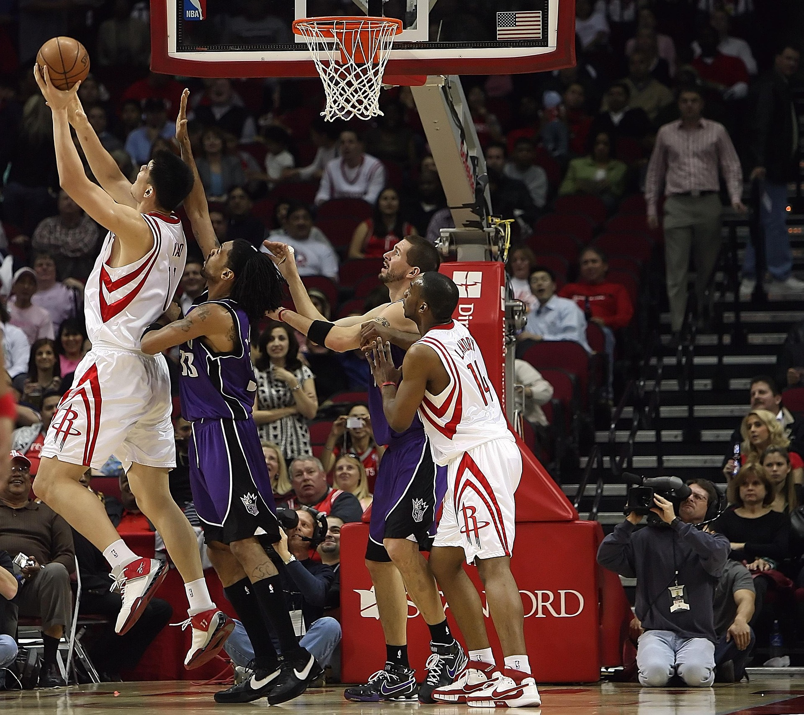

Sports
I have two favorite sports currently, first one being basketball. I've always enjoyed basketball, both playing and watching it. I like how the game is played and how it keeps you active. Playing with friends is also fun, ive just enjoyed it for as long as I can remember.
Second sport is MMA, or combat sports in general. Since I've trained in some combat sports mysel, I understand a bit of the technique and strategy which makes watching professional fights much more fun. It's fun to see how the skilled fighters handles different situations and compete at a higher level.
